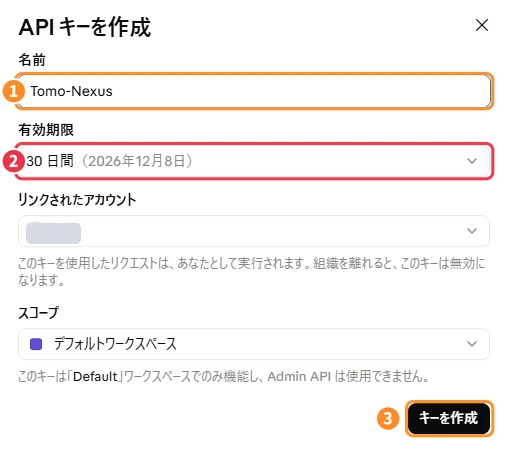
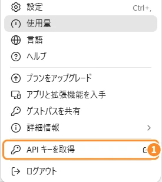
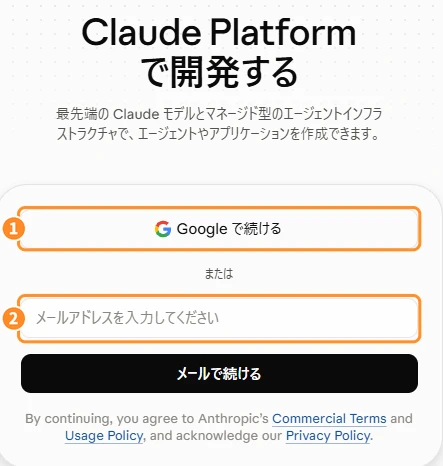
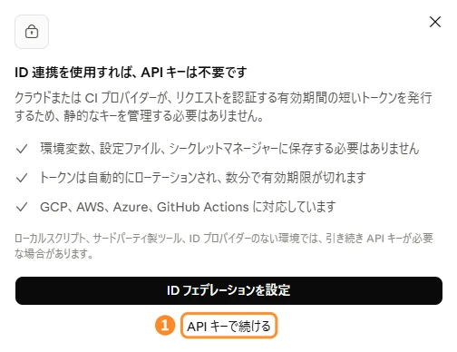
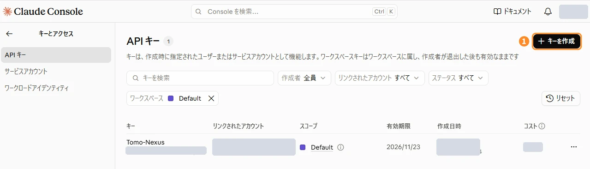
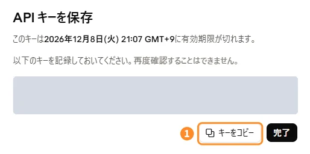

Claude API guide
キャラの「頭脳」のAPIキーを作る。
TomoNexus のキャラが考えて話したり、メモにまとめたりするのは、Anthropic の AI Claude です。ここでは、Claude の APIキー を作って TomoNexus に入れるまでを、画面つきで説明します。

① APIキーで使う（おすすめ）
使った分だけ払う方式。キーを1つ貼るだけで使えて、送った内容が AI の学習に使われません。アプリ内で「月の上限金額」も決められます。
② Claude Pro / Max / Team で使う
すでに契約している方は、追加料金なしで使えます。APIキーの代わりに Claude Code を PC に入れて、ログインしておいてください。→ Claude Code のインストール（公式）
Read me first
!はじめる前に、ここだけ読んでください
Claude の API は、先にクレジット（残高）を買って、使った分だけ減っていくしくみです。残高が 0 になると止まるだけで、勝手に請求は増えません。最初は $5（約800円）で十分です。
購入時に消費税（10%）が上乗せされます。買ったクレジットは返金できず、1年で期限切れになるので、少しずつ買うのがおすすめです。
残高が減ると自動で買い足す「自動チャージ（auto-reload）」があります。オンにすると、そのたびにカードに請求されます。慣れるまではオフのままにしておきましょう（最初はオフです）。
キーを作るときに有効期限を選びます。期限が来ると、TomoNexus が急に話せなくなります。期限を延ばすことはできないので、迷ったら「なし（無期限）」がおすすめです。→ くわしくはこちら

「前払い」だから、チャージした分以上は使われないよ。$5 チャージして、どれくらい減るか見てから足していけば安心だね！
Claude Console を開く
APIキーは、開発者向けの管理画面 Claude Console（platform.claude.com）で作ります。ふだん claude.ai を使っている方は、左下のアカウントのメニューにある 1API キーを取得 からも開けます。
claude.ai（チャット）と Claude Console（API）は、料金が別々です。Claude Pro などを契約していても、API のクレジットは別に買う必要があります。

サインイン（またはアカウントを作る）
- 1Google で続ける：Google アカウントでそのまま入れます
- 2メールで続ける：メールアドレスを入れると、ログイン用のリンクが届きます
はじめての方は、そのままアカウントが作られます。名前などいくつか質問が出たら、答えて進んでください。
claude.ai と同じメールで入ると、メニューから行き来しやすいよ。

クレジットを買う（前払い）
Console の 請求（Billing） のページを開いて、「Purchase credits（クレジットを購入）」を押します。
- 金額を選ぶ：$5・$20・$100・その他から。最初は $5 で十分です
- 請求先住所を入れる（都道府県が空だと、購入ボタンが押せません）
- カード情報を入れる。「事業者の税番号」は個人なら空欄でOK
- 金額・消費税・合計を確認して「購入」
買ったクレジットはすぐに使えます。画面の右上に残高が表示されます。
購入のあとに出る「自動チャージ（auto-reload）」の設定は、オンにしなくて大丈夫。残高が少なくなったら、自分で買い足せばいいよ。
右の図は流れを説明するためのイメージです。実際の画面の文言や並びは、時期によって変わることがあります。
→ 最初はオフのままでOK
APIキーを作り始める
Console の API キー のページを開いて、右上の 1＋ キーを作成 を押します。
「ID 連携を使用すれば、API キーは不要です」という案内が出たら、いちばん下の API キーで続ける を押してください（ID 連携は、会社のサーバー向けのしくみです）。


名前と有効期限を決めて作成
- 1名前：自分でわかる名前に（例：
TomoNexus） - 2有効期限：迷ったら「なし（無期限）」。30日などを選ぶと、その日に TomoNexus が話せなくなります
- リンクされたアカウント・スコープ：そのまま（自分・デフォルトワークスペース）でOK
- 3「キーを作成」を押す
有効期限はあとから延ばせないの！期限つきにしたときは、切れる前にメールが届くから、新しいキーを作って TomoNexus に貼り直してね。
TomoNexus はキーを Windows の資格情報マネージャーに保存し、設定ファイルやログには書き出しません。それでも心配な方は、期限つき（たとえば30日）にして、こまめに作り直すこともできます。
キーをコピーする（表示は1回だけ）
作ったキー（sk-ant- で始まる長い文字）が表示されます。1キーをコピー を押して、すぐに TomoNexus に貼りましょう。
この画面を閉じると、もう二度とキーは見られないよ！コピーしそびれたら、キーを作り直せば大丈夫。前のキーは一覧から削除しておこうね。

TomoNexus に貼って完了
TomoNexus のセットアップ画面（または設定画面）で、AI を「APIキー」にして、コピーしたキーを貼り付ければ完了です。
- アプリ内で「月の上限金額」を決めておくと、使いすぎを防げます
- 使った金額は、Console の右上の残高や、キーの一覧の「コスト」で確認できます
キーはお財布のカギみたいなもの。人に見せたり、SNS に貼ったりしないでね。見られちゃったら、一覧の「…」からすぐ削除して作り直そう！
FAQ
よくある質問
どれくらいお金がかかりますか？
会話は軽量モデル、まとめは高性能モデルのおすすめ設定で、毎日使って月200円くらいが目安です（使い方によって変わります）。$5 チャージして、減り方を見てから足すのがおすすめです。
Claude Pro を契約しています。APIキーも必要？
いいえ。Claude Pro / Max / Team をお持ちなら、APIキーの代わりに Claude Code を入れてログインすれば、追加料金なしで使えます。ただし、AI の学習への使われ方などの規約が APIキーとは違います。くわしくは プライバシーポリシー をご覧ください。
急にキャラが話さなくなりました
次の2つが考えられます。
クレジットの残高が 0：Console の請求ページで買い足してください。
キーの有効期限が切れた：期限切れのキーは元に戻せません。新しいキーを作って、TomoNexus に貼り直してください。キーの一覧の「有効期限」で確認できます。
「キーを作成」が押せません
会社などの組織に入っているアカウントだと、権限によってはキーを作れないことがあります。個人のアカウントで作るか、組織の管理者に相談してください。
キーを人に見られてしまいました
Console の API キーの一覧で、そのキーの「…」から削除（または無効化）してください。新しいキーを作って、TomoNexus に貼り直せば大丈夫です。
※ 画面・料金・しくみは Anthropic の都合で変わることがあります。最新の情報は Claude APIキーを取得する・API の支払いについて（Anthropic）でご確認ください。このページは TomoNexus が作った説明で、Anthropic とは関係ありません。